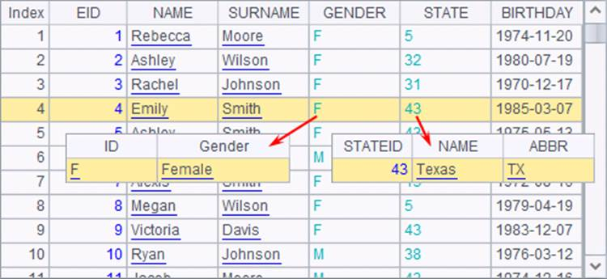
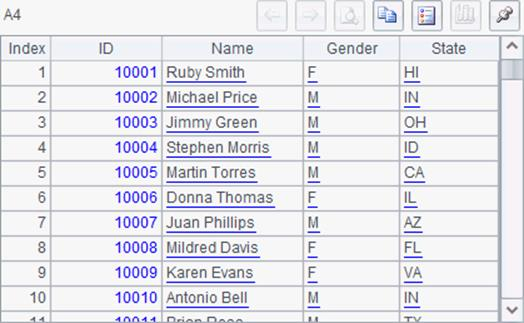
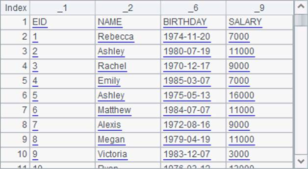
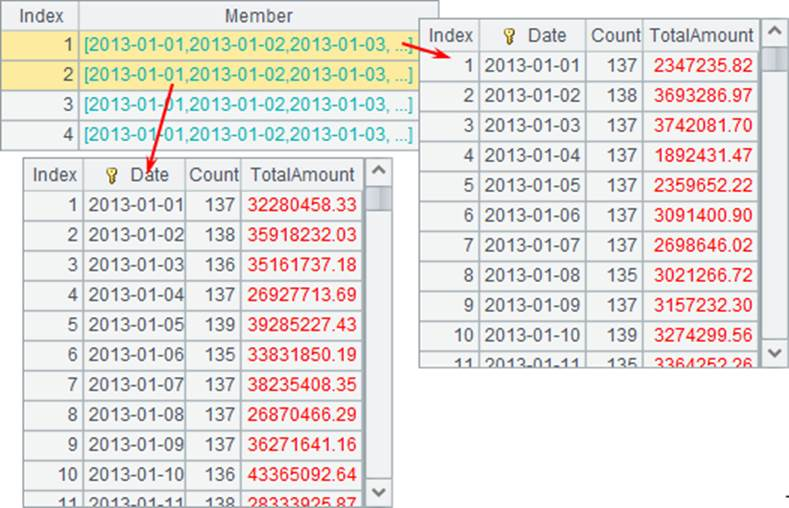
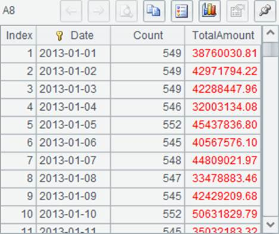
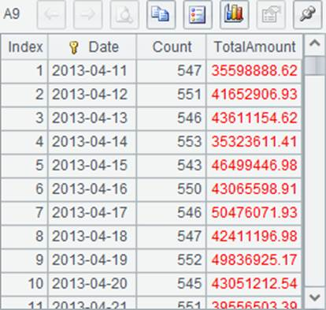
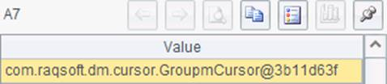

The file function and import function are used to read data from text files. For example, the text file employee.txt holds information of 500 employees, as shown below:
|
EID |
NAME |
SURNAME |
GENDER |
STATE |
BIRTHDAY |
HIREDATE |
DEPT |
SALARY |
|
1 |
Rebecca |
Moore |
F |
California |
1974-11-20 |
2005-03-11 |
R&D |
7000 |
|
2 |
Ashley |
Wilson |
F |
New York |
1980-07-19 |
2008-03-16 |
Finance |
11000 |
|
3 |
Rachel |
Johnson |
F |
New Mexico |
1970-12-17 |
2010-12-01 |
Sales |
9000 |
|
4 |
Emily |
Smith |
F |
Texas |
1985-03-07 |
2006-08-15 |
HR |
7000 |
|
5 |
Ashley |
Smith |
F |
Texas |
1975-05-13 |
2004-07-30 |
R&D |
16000 |
|
6 |
Matthew |
Johnson |
M |
California |
1984-07-07 |
2005-07-07 |
Sales |
11000 |
|
7 |
Alexis |
Smith |
F |
Illinois |
1972-08-16 |
2002-08-16 |
Sales |
9000 |
|
8 |
Megan |
Wilson |
F |
California |
1979-04-19 |
2004-04-19 |
Marketing |
11000 |
|
9 |
Victoria |
Davis |
F |
Texas |
1983-12-07 |
2009-12-07 |
HR |
3000 |
|
¡ |
|
|
|
|
|
|
|
|
esProc sets rules for the format of the data table that has a text data source: Records must be separated by the carriage return and fields should be separated by the tab. Text data can be imported using simple code:
|
|
A |
|
1 |
=file("employee.txt") |
|
2 |
=A1 .import@t() |
|
3 |
=A1 .import() |
In esProc, import function is used to import the file data as the table sequence. In the above cellset, A1 creates a file object. If the path hasn¡¯t been specified in the file name, it can be found in the main path specified on the settings page. Click on Tool>Options on the menu bar to view or set the main path on the Environment page of Option window:
A2 imports the file as a table sequence. The use of @t option in the import function will import the text file¡¯s first row as the column names. For a clearer comparison, the option is omitted in A3¡¯s data importing. After the code is executed, A2¡¯s table sequence is as follows:

Not all files use tab as the field separator. The CSV file, for instance, uses commas. You can specify a separator when using import. For example, A2¡¯s code can be modified as =A1 .import@t(;,","). A3 generates a table sequence as follows:
With the absence of @t option, the table sequence¡¯s field names will be automatically generated and named _1,_2,_3 according to their positions.
When text data is being imported, its data type will be automatically parsed according to the data type of the first row. As the first row of employee.txt holds field names, all data of A3¡¯s fields will be parsed into strings, like column _1 and column _9 in the result above, which are left-justified. While the data types in A2¡¯s EID field and SALARY field are integer, and, therefore, data is right-justified.
You can import only some of the fields of a text file to generate a table sequence:
|
|
A |
|
1 |
=file("employee.txt") |
|
2 |
=A1.import@t(EID,NAME,BIRTHDAY,SALARY) |
|
3 |
=A1.import(#1,#2,#6,#9) |
The use of @t option in A2 allows directly using names to specify to-be-imported fields. Here¡¯s A2¡¯s result:

Without @t option, A3 specifies the to-be-imported fields with their serial numbers in the format of #i. Here¡¯s the resulting table sequence:

As mentioned above, during text data importing, data type will be automatically parsed according to that of the first row. But if a particular data type is wanted, it can be defined for the specified fields to be imported. For example:
|
|
A |
|
1 |
=file("employee.txt") |
|
2 |
=A1.import@t(EID:string,NAME,BIRTHDAY:date,SALARY:int) |
|
3 |
=A1.import(#1:string,#2,#6:date,#9:int) |
esProc provides the following choices for data type specification:
|
Settings |
string |
int |
float |
long |
decimal |
date |
datetime |
time |
bool |
|
Data types |
String |
Integer |
Floating point number |
Long integer |
Big decimal |
Date |
Date/time |
Time |
Boolean |
Refer to Basic Data Types to learn more.
A2 specifies data types for EID field, BIRTHDAY field and SALARY field as string, date and integer respectively. After execution, A2¡¯s table sequence is as follows:

As A2, A3 specifies the same data types for those fields. The resulting table sequence is as follows:

It can be seen that if certain data of a field cannot be parsed into the specified data type, it will be parsed automatically, like the title row, which has been automatically parsed into strings.
About computations after data is imported, see Operations on TSeqs and RSeqs.
esProc allows not only importing text data as a table sequence, but exporting the in-memory data to a text file. Usually the to-be-exported data comes from a table sequence or a record sequence, or sometimes, an ordinary sequence. The export function is used to export data to a file.
|
|
A |
|
1 |
=file("employee1.txt") |
|
2 |
=create(EID,NAME).record([1,"Frank",2,"Harry"]) |
|
3 |
>A1.export(A2) |
A1 creates a file object, employee1.txt, to store data. But at this point the file is still stored in the report¡¯s main path. A2 creates a table sequence and inserts two records into it:
A3 exports data of the table sequence to the employee1.txt file:

The @t option can be used to export the column names. And you can specify certain fields to be exported. For example, by modifying A3¡¯s code into >A1.export@t(A2,NAME), the exported data in employee1.txt will be as follows:
As with the import function, tab is used as the default field separator in the export function. But a user-defined separator is also allowed. For example:
|
|
A |
|
1 |
=file("employee2.txt") |
|
2 |
=create(EID,NAME).record([1,"Frank",2,"Harry"]) |
|
3 |
>A1.export@t(A2;"_") |
A3 uses "_" as the separator in the export function to write the table data into a file. So the exported file employee2.txt should be as follows:
CSV files are commonly used in data analysis and processing. A CSV file is a text file separated by commas. To generate such a file, you can define the separator directly in the export function or use the @c option. For example:
|
|
A |
|
1 |
=file("employee3.csv") |
|
2 |
=create(EID,NAME).record([1,"Frank",2,"Harry"]) |
|
3 |
>A1.export@tc(A2) |
Below are the two forms of the exported file employee3.csv opened with Excel and with the text tool respectively:

The @c option work with import function to generate a comma-separated data table imported from a text file.
To handle bin files, you just need to add @b option to the export or import function. Details are discussed in Bin Files.